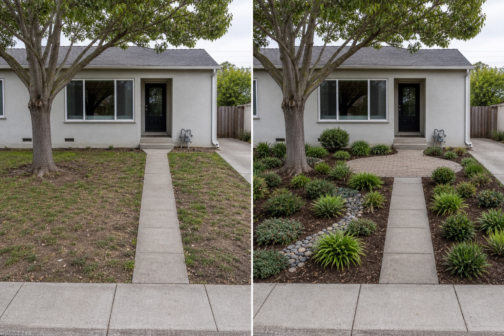

Make the entrance route unmistakable
Keep the door-to-sidewalk route continuous and legible. Mark the real path width, steps, thresholds, gates, driveway crossings, delivery route, and mobility needs before changing edges or adding plants.
A welcoming front yard is more than a view from the street. Begin with the daily route, sightlines, drainage, utilities, and public edge; then use planting and one clear focal area to support the entrance.
Editorially reviewed July 27, 2026.
This AI-generated comparison is inspiration, not a measured plan, planting specification, safety assessment, code review, or construction guarantee.

Keep the door-to-sidewalk route continuous and legible. Mark the real path width, steps, thresholds, gates, driveway crossings, delivery route, and mobility needs before changing edges or adding plants.
Locate places where drivers, cyclists, and pedestrians need to see one another, and where the entrance needs passive visibility. Verify local requirements before selecting the mature height or position of planting, fences, or structures.
Repeat a restrained plant structure around the entrance or an existing tree while leaving services reachable. Choose species only after checking local climate, soil, mature size, roots, invasive status, and safety needs.
The public sidewalk, driveway, main path, steps, building openings, mature tree, meter, downspout, and property-side access remain in place. The image does not verify boundaries, easements, underground services, tree protection zones, drainage direction, path dimensions, or legal sight triangles.
Record property boundaries, sidewalk and driveway edges, path widths, steps, thresholds, gates, parking movement, deliveries, bins, and any route that must remain usable.
Identify slopes, drains, downspouts, runoff, irrigation, meters, valves, overhead lines, and marked underground services. Do not redirect water or excavate from an image.
Check locally applicable permissions, easements, visibility requirements, fence and structure limits, street-tree rules, accessibility, lighting, and any restrictions on work near a sidewalk or road.
Allow for roots, canopy, pruning, leaf fall, watering, snow or seasonal tasks, surface cleaning, and safe service access. Confirm plant suitability and safety with qualified local sources.
Start with a measured map of the entrance route, driveway movement, sidewalk edge, levels, water, utilities, boundaries, and required sightlines. Those fixed conditions should guide planting and decorative choices.
Clarify the path, repeat a limited planting structure, define one focal area, tidy edges, and remove conflicts around doors or services. Test reversible changes first and keep healthy existing elements where they support the plan.
Pause before excavation, drainage changes, tree work, new walls or fences, electrical work, altered levels, work near utilities or the public edge, or any decision involving permits, accessibility, visibility, boundaries, structure, or safety.
Upload a level, wide photo that includes the entrance, boundaries, ground, and fixed services, then compare visual directions before measuring or specifying work.
AI-generated visualizations are concepts. Verify measurements, boundaries, utilities, drainage, access, visibility, local rules, plant information, and professional requirements before buying, planting, digging, or building.